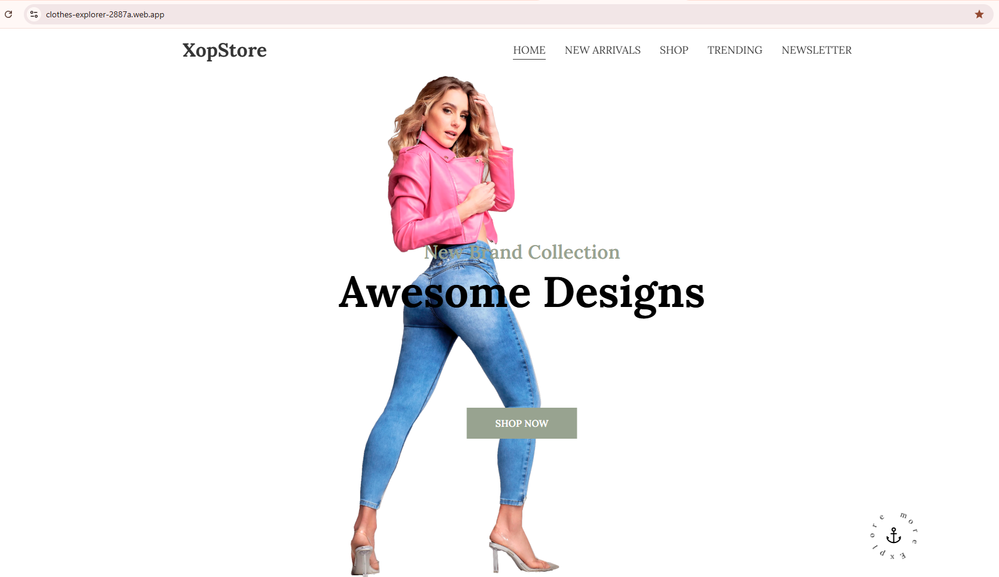
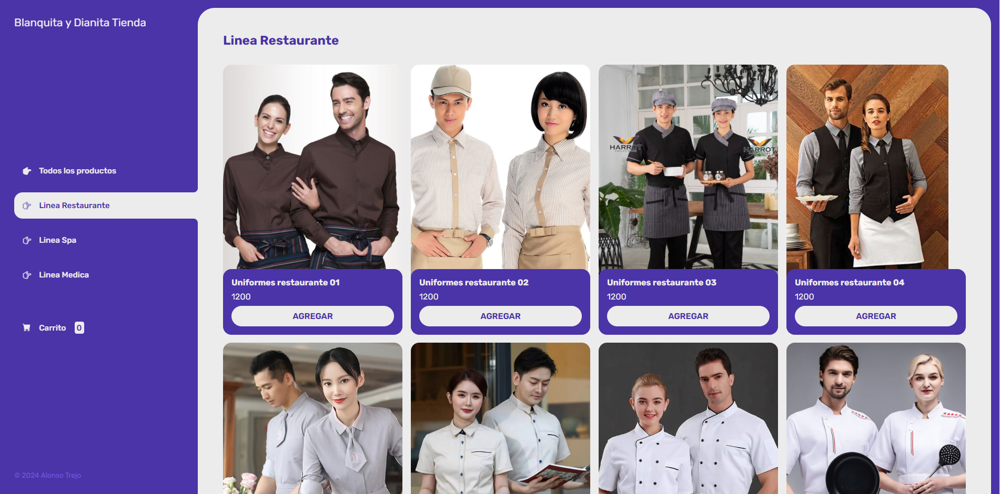
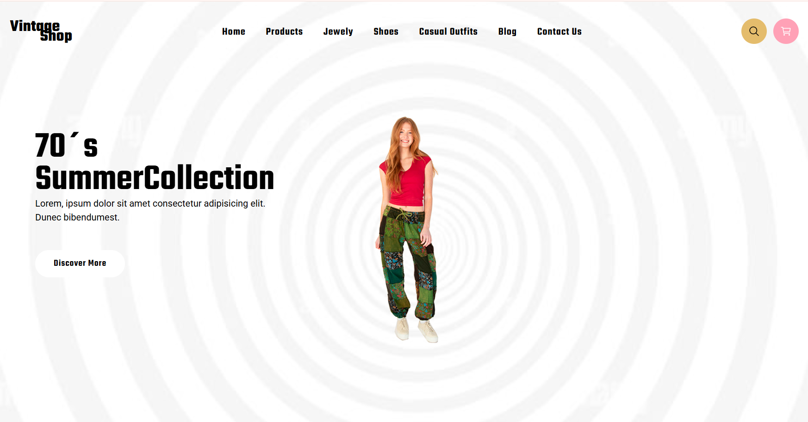
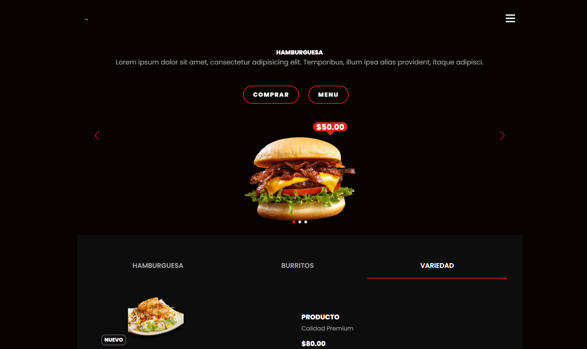
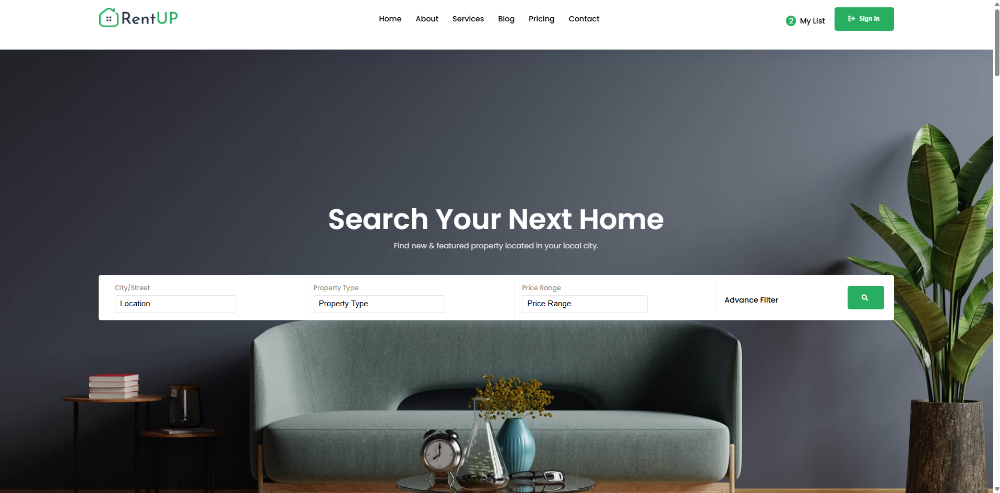
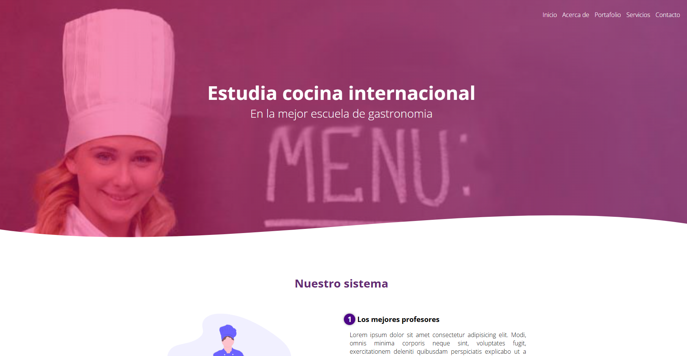
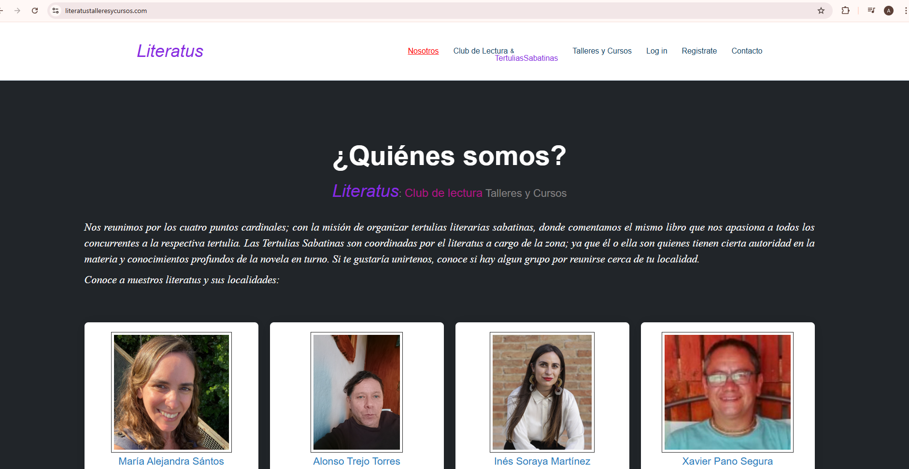
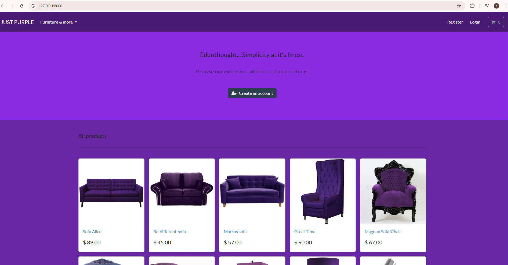
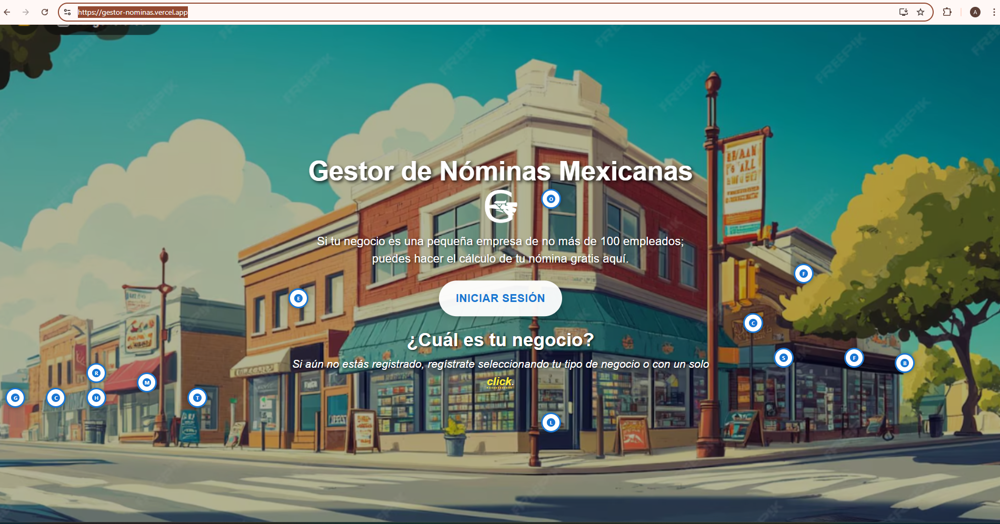
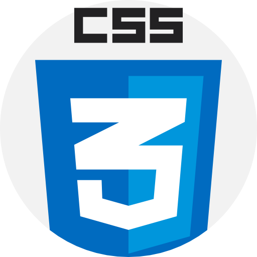

Front-end projects

XopStore
Desarrollé este proyecto pensando en implementar toda la capacidad creativa que puede potenciar CSS con sus efectos y propiedades, en perfecta comunión con JavaScript. Como desarrollador front-end, busco la forma de enriquecer mis conocimientos mediante tutoriales avanzados de CSS y JavaScript que ofrecen plataformas como UDEMY. Fue así que encontré el tutorial que enseñaba estas técnicas plasmadas en esta página web, y yo la personalicé con una propuesta de tienda boutique de ropa. El resultado fue XopStore.

UNIFORMES DIANA
Pensé en desarrollar una tienda virtual con tecnologías y lenguajes básicos del front-end, y que se pudiera en esta misma manejar un carrito de compras, sumando y restando productos para finalmente llegar a un total a pagar por el usuario. Como base de datos usé un simple array de productos en formato JSON.

Tienda de Ropa Vintage para Mujer
Implementé en esta ocasión algunas de las técnicas de CSS en conjunción con JavaScript aprendidas previamente, y quise crear una página web con temática retro, tratando de sincronizar y uniformar todos los elementos en un contexto vintage para que la ilusión surta efecto en el usuario y se quede con una agradable sensación de haber viajado en el tiempo para hacer sus compras.

PÁGINA WEB DE HAMBURGUESAS
Implementé los recursos que usaría un buen arquitecto web para optimizar espacios de la página en cuestión con sliders y swipers de diversas variables que despliegan la información y productos con una buena estructuración y con buen gusto. Como sabemos, estos recursos son muy empleados en muchas páginas web, pero creo que no siempre serán la técnica indicada para determinadas situaciones. Considero que en este ejemplo fueron una exquisita forma de presentar los alimentos e información de algún cliente dentro del sector gastronómico.


Escuela de Gastronomía
Busqué adaptar las ventajas que ofrecen los grids a la funcionalidad de esta página para quedar convencido de que este es un recurso muy eficaz y práctico a la hora de querer realizar una página web en corto tiempo. Creo que el resultado es muy satisfactorio y lo realicé en menos de dos horas.
Back-end projects
.png)

literatustalleresycursos.com
Desarrollé esta página web como una plataforma que ofrece cursos y talleres literarios donde los escritores de cualquier parte del mundo de habla hispana puedan registrarse gratuitamente y ofrecer estos cursos en sus comunidades, ya que los que quieran inscribirse podrán hacerlo desde esta misma plataforma al registrarse si encuentran un curso dentro de sus localidades, pues la idea es que los eventos ocurran de forma presencial.

JUST PURPLE & PURPLE
Realicé este comercio virtual con la idea de trabajarlo desde el backend, donde la importancia de la base de datos juega un papel primordial. Implementé PostgreSQL como base de datos y desarrollé las funcionalidades de este ecommerce con Python y Django, dando un backend robusto para el correcto despliegue de cualquier página de compras.

GESTOR DE NÓMINAS MEXICANAS
Diseñé esta aplicación con la idea de proponer una forma más práctica y sencilla de procesar la tan complicada nómina mexicana. Esta plataforma puede gestionar la nómina básica de cualquier empresa con menos de 100 empleados. Realiza los cálculos de las retenciones del IMSS e ISR, así mismo descuenta las faltas injustificadas a los trabajadores y suma las primas dominicales y las percepciones por días festivos trabajados. Procesa nóminas semanales, quincenales y mensuales.

TECH STACK
JavaScript
HTML5

CSS
Python
Django

SQL

Postman

Git & GitHub
Django REST Framework
ABOUT ME
Todos mis conocimientos adquiridos sobre el desarrollo web y codificación del backend y el frontend, así como la creación de las bases de datos, los he estado revalidando y mejorando mediante el estudio de nuevas herramientas que están saliendo día con día al mercado, como las siguientes plataformas: n8n, Firebase Studio, NotebookLM, etc. Debemos tomar en cuenta hoy en día que es inconcebible desarrollar sin la asistencia constante de la Inteligencia Artificial (LLM): GPT, Claude, LLaMA de Meta, Gemini de Google, etc.